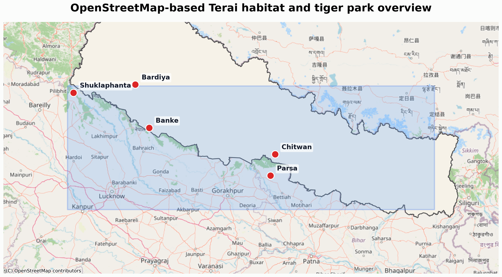
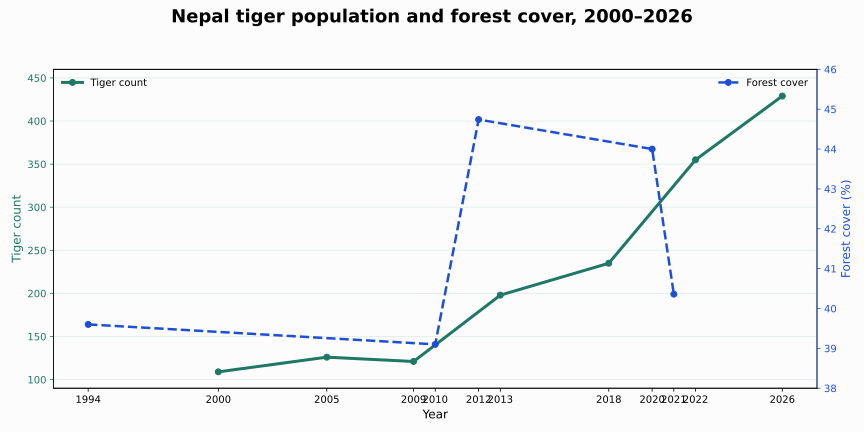
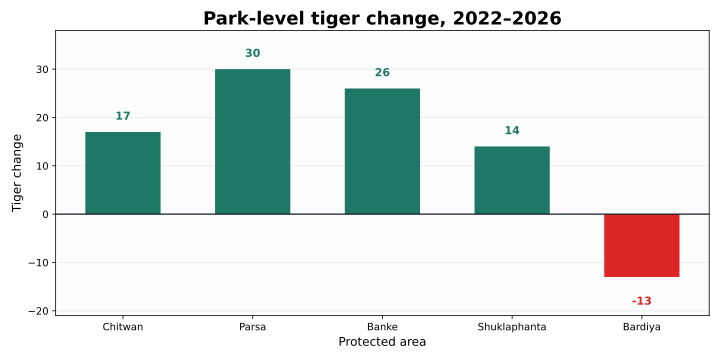

Growth
3.5x
Population gain from the 2009 baseline.
ESIIL • Spatial data • Conservation research
This research story uses Python-generated graphics and OpenStreetMap basemaps to present tiger population growth, forest-cover trends, and the Terai habitat context in a polished, research-ready format.

Growth
Population gain from the 2009 baseline.
Forest cover
Stable national forest-cover range during the study period.
Terai corridor
Primary tiger recovery landscape in Nepal.
Research output
All graphs are built from repository CSV data.
Introduction
This analysis presents Nepal tiger census and forest-cover data together with a Terai habitat map. It is designed to make the key conservation trends easy to read with simple visuals and a concise research narrative.
Trend chart

Tiger counts and forest cover are shown side by side from 2000 through 2026.
Park comparison

Park-level tiger changes highlight the spatial distribution of recent recovery.
Habitat map
The OpenStreetMap-backed map anchors tiger recovery in the Terai forest corridor.
Conclusion
Nepal’s tiger recovery is supported by rising population trends, stable forest cover, and strong Terai corridor protection. These visuals present the core research story with clear, data-based evidence and minimal text.